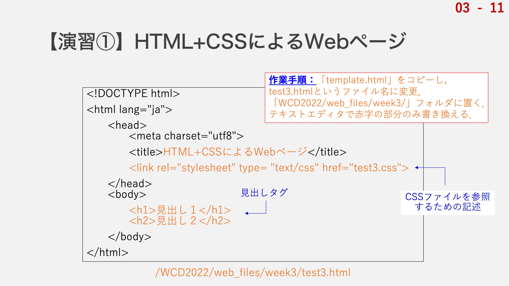
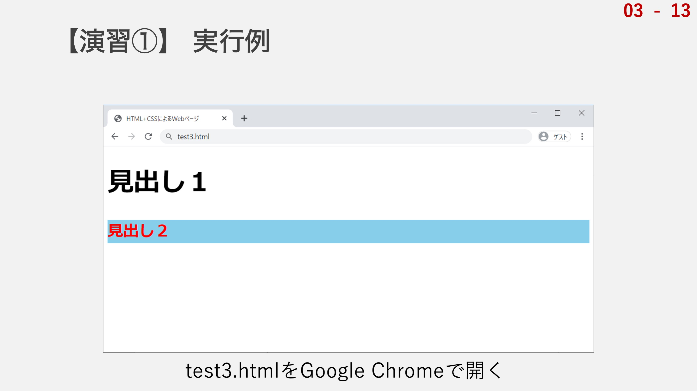

では，演習として，実際にHTMLとCSSを組み合わせたWebページを作成しましょう．
前回の講義で作成した「template.html」を基に，最小限の編集でWebページを作成していきます．
HTMLファイルとCSSファイルは別物なので，２つのファイルを作成しますが，まずはHTMLからです．
今日は第三回目の講義なので，test3.htmlというファイル名にして「WCD2022/web_files/week3」というフォルダに置きましょう．
テンプレートから変更しなければならないのは，赤字の部分だけです．
このlinkタグというのが重要な部分ですね．
これがあることで，HTMLファイルとCSSファイルが結びつきます．
では，各自でtest3.htmlを作成して次に進みましょう．
HTMLファイルが作成できたので次はCSSファイルです．
CSSファイルの作成・編集方法はHTMLのときと同じで，テキストエディタを使います．
この講義では，皆さんにAtomをインストールしていただいたので，Atomで作業をしていただきます．
テンプレートはないので，０から作りましょう．
とはいえ，たった６行なのですぐに作成できるはずです．
Atom（テキストエディタ）で新規ファイル（ショートカット：ctrl+N/cmd+N）を作成してこちらに示した内容を書き写し，保存しましょう．
ファイル名はtest3.cssとして，これも同じく「WCD2022/web_files/week3」フォルダに置いてください．
関連付けたHTMLファイルとCSSファイルが同じディレクトリに置いてあるということが重要です．
では，こちらも各自で作成して次に進みましょう．

HTMLファイルとCSSファイルが作成出来たら完了です．
どのような見た目になったかを確認してみましょう．
test3.htmlをGoogle Chromeで開いてみてください．
こちらのような見た目になっていれば成功です．
解説です．
HTMLファイルの方には，h1タグとh2タグを使って「見出し１」と「見出し２」を作成しました．
CSSファイルの方には，まず１行目で，「h1タグの」，「文字サイズを」，「50ピクセルに」と書きました．
これにより，test3.htmlを開いたときの「見出し１」の文字が大きくなりました．
続いて，２行目以降で，「h2タグの」，
・「文字を」，「赤く」
・「文字サイズを」，「30ピクセルに」
・「背景色を」，「スカイブルーに」
するという３つのスタイルの適用を記述しました．
もし思い通りに結果が表示されなかった場合は，色々な原因が考えられますので，一つずつ可能性を潰していきましょう．
スペルは間違っていないでしょうか？
そもそも編集しているファイルとChromeで開いているファイルは同じものでしょうか？
全角スペースや全角文字をタグの中に入れてしまっていませんか？
linkタグで参照しているCSSファイルがきちんと指定場所に置いてありますか？
こういった一つのミスで思い通りに表示されないということがありますので，慣れるまでは難しく感じてしまう人もいるかもしれません．
ですが，慎重に，正確に記述すればきちんと結果は出ますので，焦らず，説明を読み飛ばしたりせずに進めていきましょう．